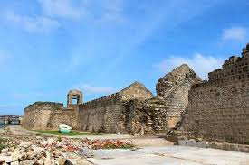
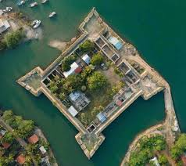
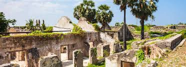

Mannar Fort
 
Mannar Fort is located on Mannar Island, Sri Lanka.
It was built by Portuguese in 1560 and christened São Jorge.
The fort fell to the Dutch in 1658, and they rebuilt the fort in 1696.
In 1795 the British occupied the fort following the surrender by the Dutch.
It is a square-shaped fort with four bastions and is located next to the new bridge that connects the mainland with the Mannar Island.
The fort is currently occupied by the Department of Archeology.
 Location (Mannar Fort)